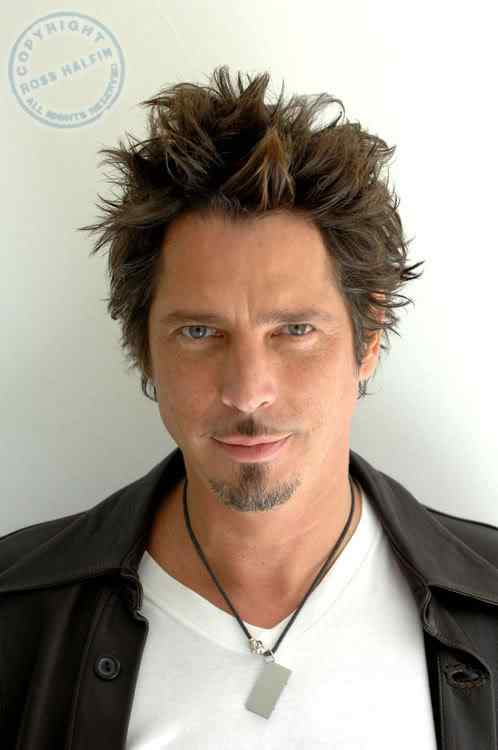
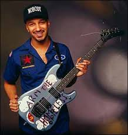
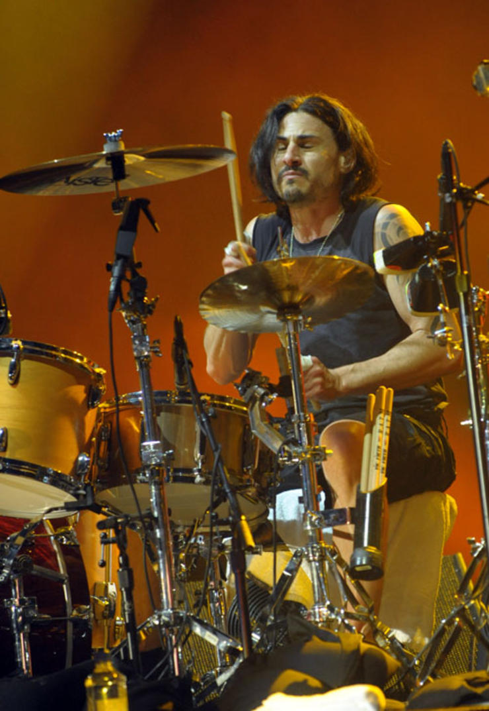
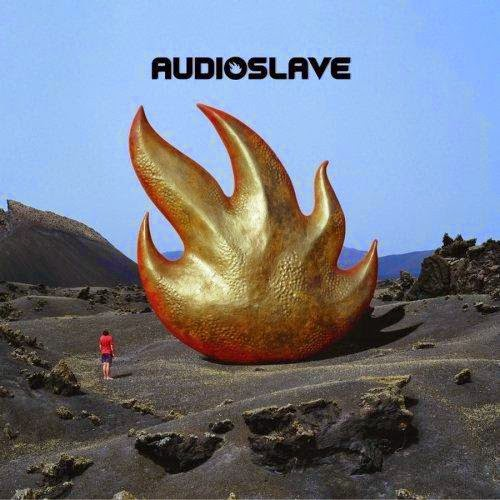
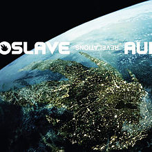

Audioslave é um supergrupo de rock norte-americano formado em 2001, em Los Angeles, na Califórnia. A banda consistiu do integrante do Soundgarden, Chris Cornell, como vocalista e guitarrista, e pelos ex-integrantes do Rage Against the Machine, Tom Morello (guitarra), Tim Commerford (baixo e backing vocal) e Brad Wilk (bateria). Críticos, inicialmente, descreveram o Audioslave como uma "amalgamação" do Rage Against the Machine com o Soundgarden; porém, com o segundo álbum do grupo, Out of Exile, notou-se que eles tinham estabelecido uma identidade separada.
A sonoridade da banda foi criada pela combinação do hard rock dos anos 70 com o rock alternativo dos anos 90; além disso, Morello incorporou os seus reconhecidos solos de guitarra não-convencionais à essa mistura. Assim como no Rage Against the Machine, orgulhava-se do fato de todos os sons do Audioslave terem sido produzidos usando tão somente guitarra, baixo, bateria e vocais.
| Foto | Nome | Data de Nascimento | Instrumento |
|---|---|---|---|
|  | Chris Cornell | 20/07/1964 | Vocal, Bateria, Guitarra |
|  | Tom Morello | 30/05/1964 | Guitarra, Contrabaixo, Bateria, Vocal |
| |
Tim Commerford | 26/02/1968 | Baixo e Vocal de apoio |
|  | Brad Wilk | 05/09/1968 | Bateria e Percussão |
| Capa | Nome | Ano de Lançamento |
|---|---|---|
|  | Audioslave | 2002 |
 |
Out of Exile | 2005 |
|  | Revelations | 2007 |